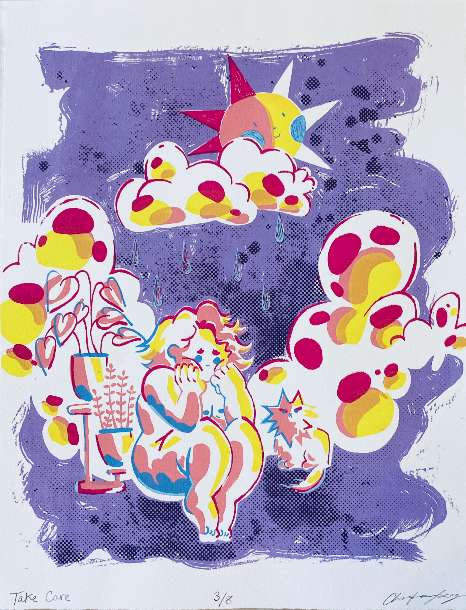
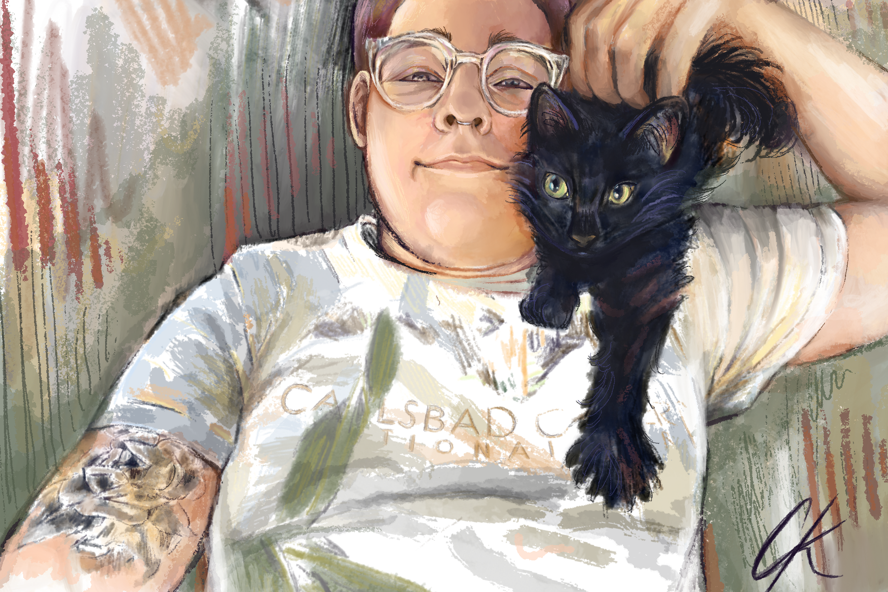

Painting & Drawing
Traditional Mixed Media Drawings & Paintings

Prints
Relief & Screen Prints
Photography & Paint
Prints of Personal Photos with Painting Elements

Digital Art
Digital Illustrative Drawings
Traditional Mixed Media Drawings & Paintings

Relief & Screen Prints
Prints of Personal Photos with Painting Elements

Digital Illustrative Drawings